Amonsun is an outdoor environment terrain and sky renderer, created as a part of dissertation project. It is
implemented in C++ using Direct3D 11 API.
The terrain rendering is based on the CDLOD technique. It generates terrain heights and normals on the fly using
heightmap and vertex shader with texture fetches, allowing for dynamic terrain modification during runtime.
Scene entities are stored in a dynamic octree and rendered with bounding box occlusion queries. Additionally, a
simple antiportal system is incorporated in the renderer.
The terrain is textured by blended detail and normal maps. Application uses forward rendering and supports only
one source of light - the sun, which casts shadows computed using shadowmap with PCF filtering. Although this
technique performs rather well, it could certainly be improved using techniques like cascaded shadowmaps.
The terrain is textured by blended detail and normal maps. Application uses forward rendering and supports only
one source of light - the sun, which casts shadows computed using shadowmap with PCF filtering. Although this
technique performs rather well, it could certainly be improved using techniques like cascaded shadowmaps.
Amonsun is influenced by atmospheric scattering effect based on Hoffman-Preetham model. Light scattering affects
terrain based only on sun color
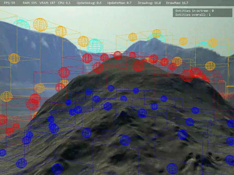
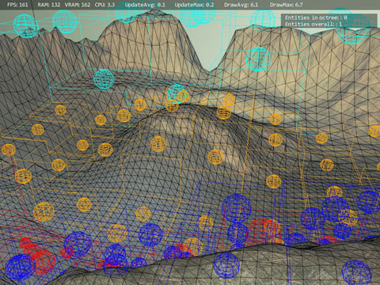
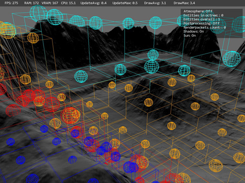
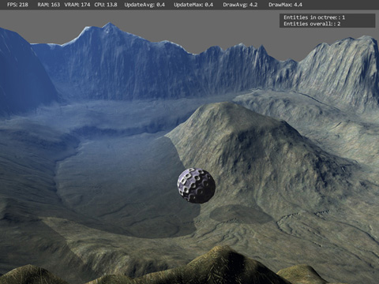
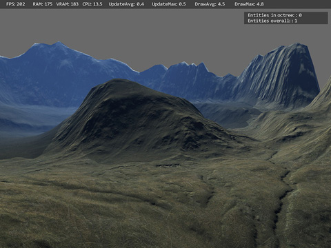
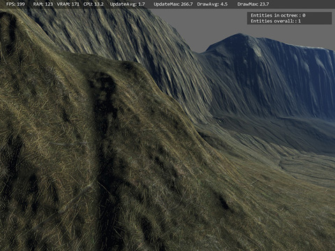
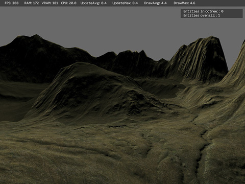
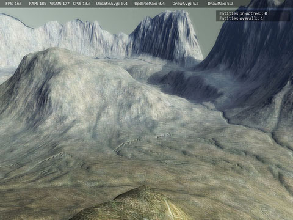
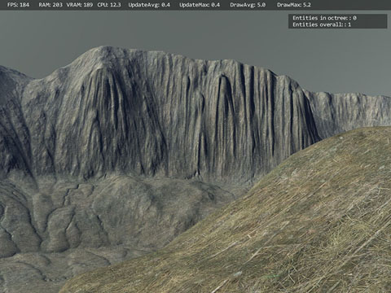
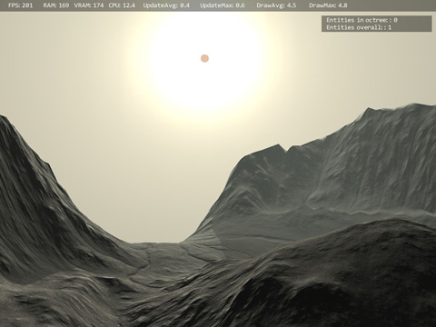

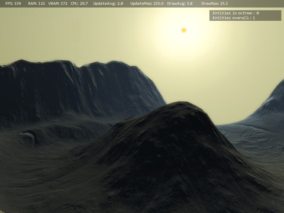
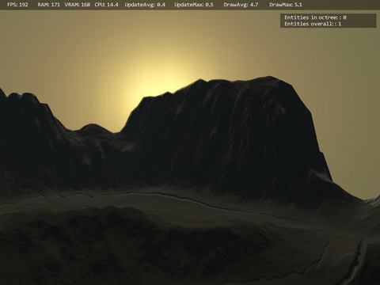
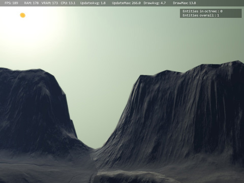
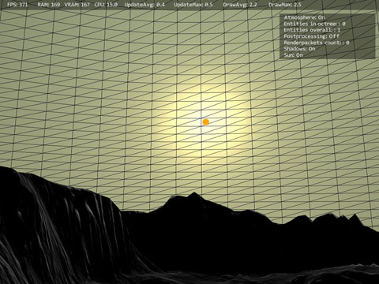
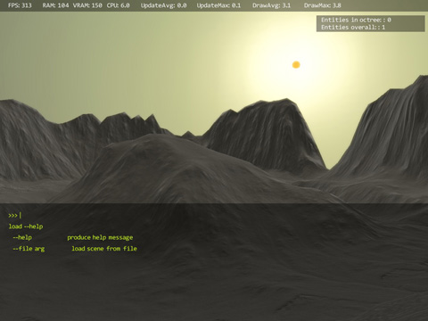
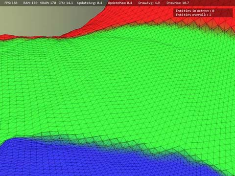
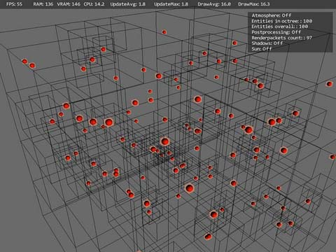